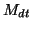

Switches the detailed printing ON/OFF; if ON, then it prints a number of essential variables along the simulation into the file stageM.out (M being the stage number) every

Example: Prt{T/F,how_often} T 10